TRIAXIS Backup & Editor
Guarde, ajuste e troque os timbres do seu Mesa/Boogie TriAxis pelo computador, sem precisar entender de MIDI. Tudo fica no seu computador: sem internet e sem cadastro.
1. Antes de começar
- Computador com Windows 10 ou 11. É só abrir o
TriAxisBackupEditor.exe: não precisa instalar nada. - Um jeito de ligar o TriAxis ao computador:
- um cabo USB-MIDI (USB numa ponta, dois plugues redondos na outra), que é o mais comum;
- ou uma placa de áudio com MIDI (RME, Focusrite etc.) e dois cabos MIDI.
- Feche outros programas de música (DAW, editores) enquanto usa este.
2. Modo simples e modo avançado
No topo da janela há uma chave Simples | Avançado.
- Simples (padrão): três caminhos guiados, Meus timbres, Backup e Tocar, sem termos técnicos. É para quase todo mundo.
- Avançado: todas as ferramentas (biblioteca com comparação, editor completo, visualização em hexadecimal, log, botões CC, aprender MIDI, ajustes de envio). É para quem já mexe com MIDI ou tem uma pedaleira como a FCB1010.
A segurança é a mesma nos dois modos. O programa lembra o último modo usado.
3. Primeira vez: o assistente
Na primeira vez, o programa abre um assistente de 4 passos. Você pode refazê-lo quando quiser, pelo botão Configurar ligação no topo ou pelo link na tela inicial.
Passo 1: o aparelho
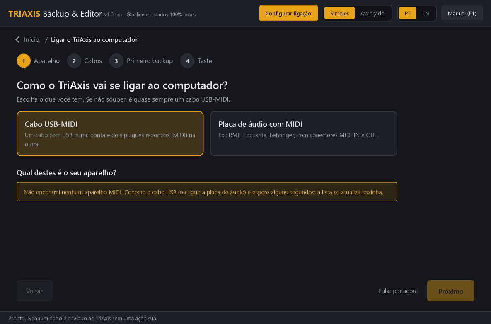
Passo 2: os cabos
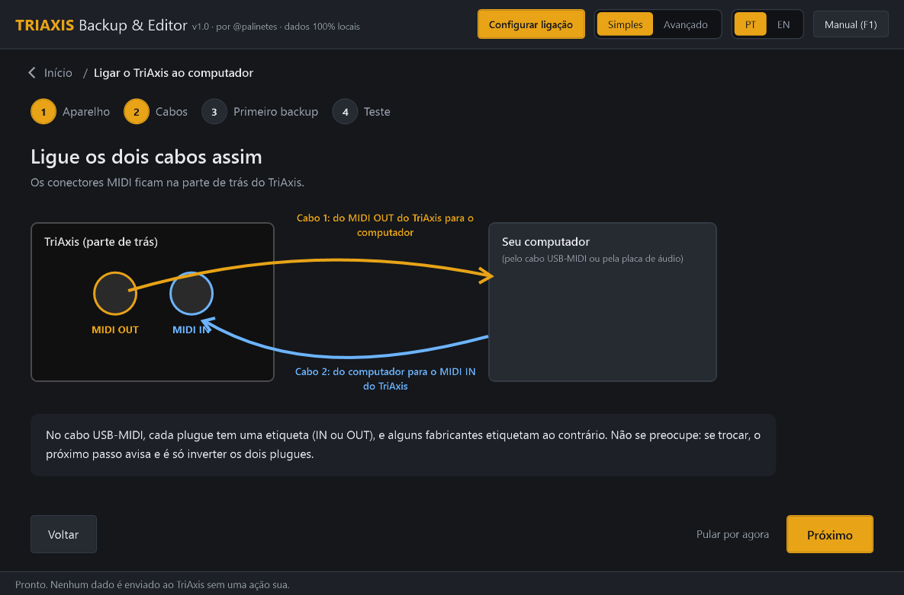
Em cabos USB-MIDI, as etiquetas IN/OUT dos plugues às vezes enganam. Se você trocar, o passo seguinte avisa, e é só inverter os dois plugues.
Passo 3: o primeiro backup
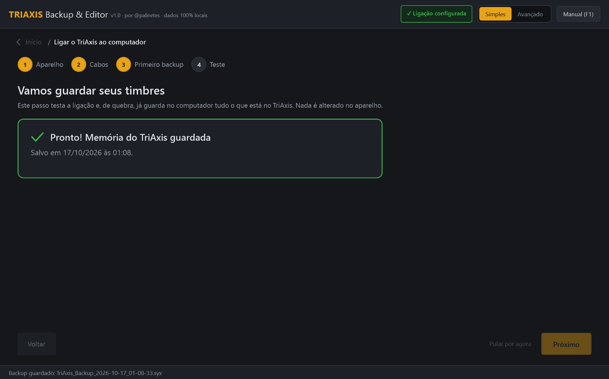
Este passo testa a ligação e, de quebra, já guarda todos os seus timbres no computador. Nada é alterado no TriAxis.
Passo 4: o teste de envio
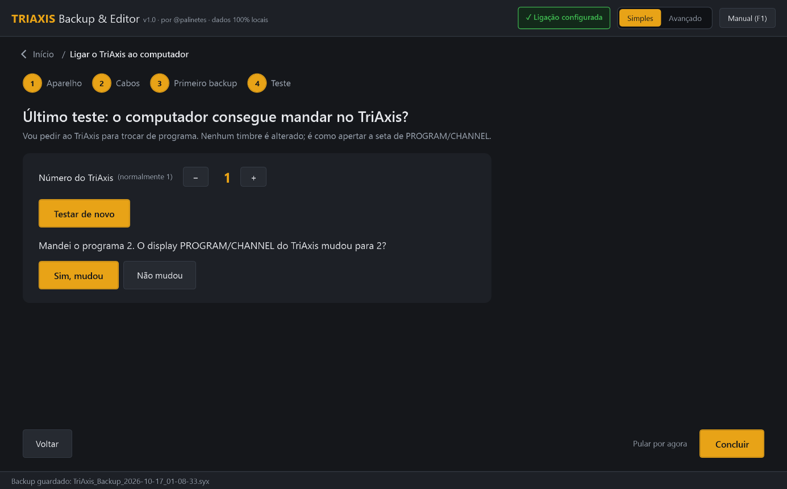
O "número do TriAxis" é o canal configurado no aparelho. Você não precisa saber qual é. O jeito mais fácil é ouvir o TriAxis: clique em Escutar o TriAxis e, no painel dele, aperte uma das setas ◀ ▶ embaixo da janela PROGRAM/CHANNEL. O TriAxis avisa o número em que está e o programa guarda. Isso só lê, não manda nada para o aparelho.
Se não ouvir nada, ou se quiser conferir se o computador também consegue mandar para o TriAxis, use o teste de envio:
- Clique em Testar a ligação. O programa manda a troca de programa para todos os números de uma vez.
- Se o display do TriAxis não mudar, o problema é a ligação (cabo, porta ou pedaleira no meio do caminho), e o programa mostra o que conferir.
- Se mudar, a ligação funciona. Com no máximo 4 testes de "mudou? sim/não", o programa descobre o número sozinho.
Se em Tocar o TriAxis não trocar de programa, use o link "O TriAxis não troca de programa? Descobrir o problema", que abre direto este teste.
4. Tela inicial
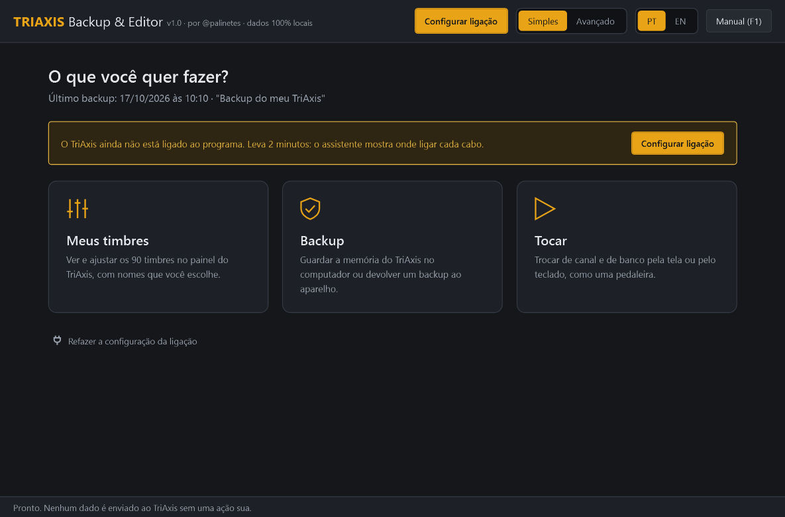
5. Meus timbres
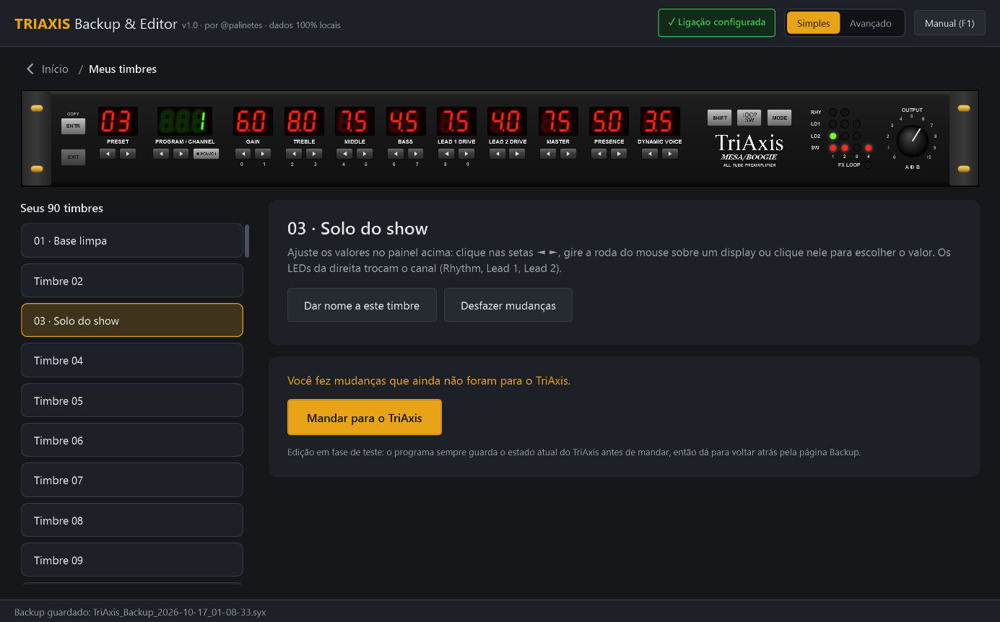
- Escolha o timbre na lista à esquerda, ou com as setas do PRESET no painel.
- Para ajustar um valor, clique nas setas ◄ ► embaixo do display, gire a roda do mouse sobre ele, ou clique nele e escolha o valor na lista.
- Os LEDs da direita trocam o canal (Rhythm verde/amarelo, Lead 1, Lead 2) e ligam ou desligam o FX LOOP e as saídas SW 1–4.
- Dar nome a este timbre: por exemplo "Base limpa" ou "Solo". Os nomes ficam só no computador, porque o TriAxis não guarda nomes. Eles aparecem também na pedaleira de Tocar.
- Desfazer mudanças volta tudo ao que estava no backup.
6. Mandar para o TriAxis
Use Mandar para o TriAxis (em Meus timbres) ou Devolver ao TriAxis (em Backup). São sempre três passos:
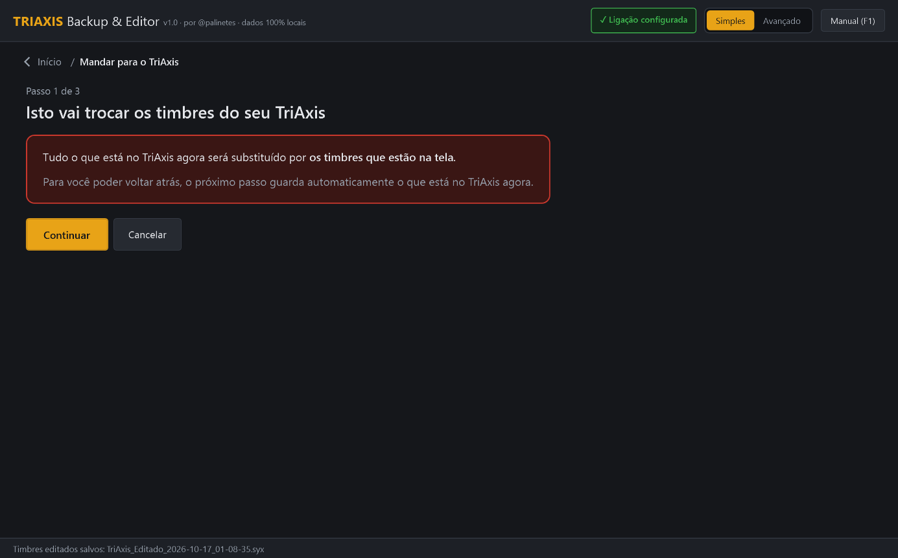
- Aviso: clique em Continuar, ou em Cancelar se mudou de ideia.
- Backup de segurança (obrigatório): aperte SHIFT + PRESET ▼ no TriAxis. O estado atual fica guardado.
- Confirmar: clique em Sim, substituir.
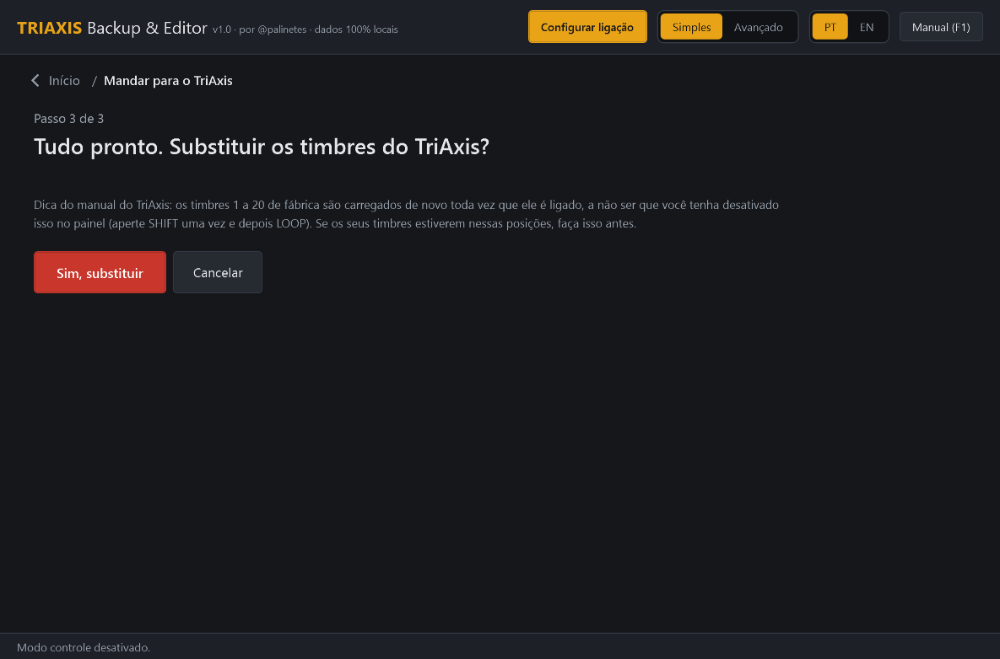
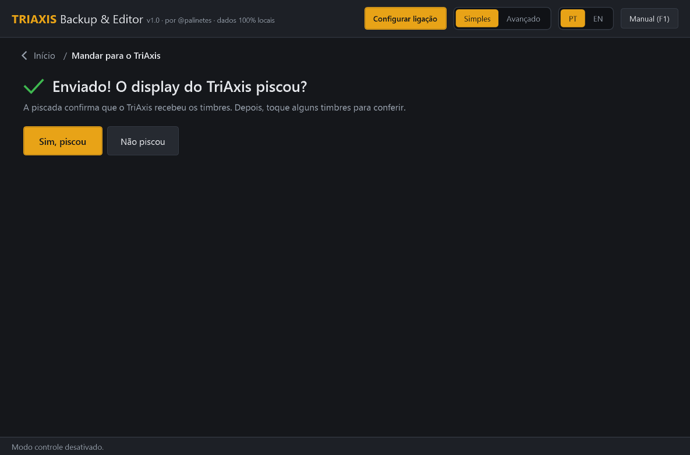
Se o display não piscar, clique em Não piscou para ver o que conferir (normalmente o cabo que vai para o MIDI IN do TriAxis) e tente de novo. Seus timbres antigos continuam guardados.
7. Backup
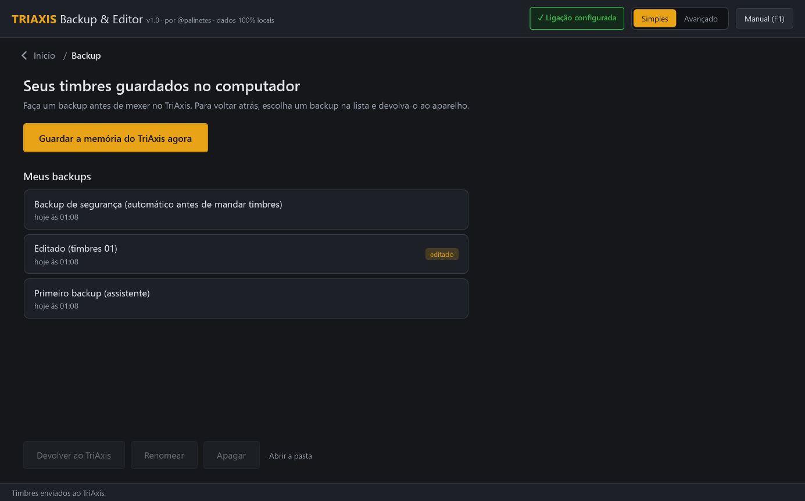
- Guardar a memória do TriAxis agora: dê um nome (ex.: "Timbres do show") e aperte SHIFT + PRESET ▼.
- Devolver ao TriAxis: escolha um backup na lista e siga os 3 passos da seção 6.
- Renomear, Apagar (o arquivo vai para a Lixeira do Windows e dá para recuperar) e Abrir a pasta (
Documentos\TriAxis Backups). - Os backups marcados como editado foram criados pela página Meus timbres.
Dica: guarde uma cópia da pasta de backups num pendrive ou na nuvem de vez em quando.
8. Tocar
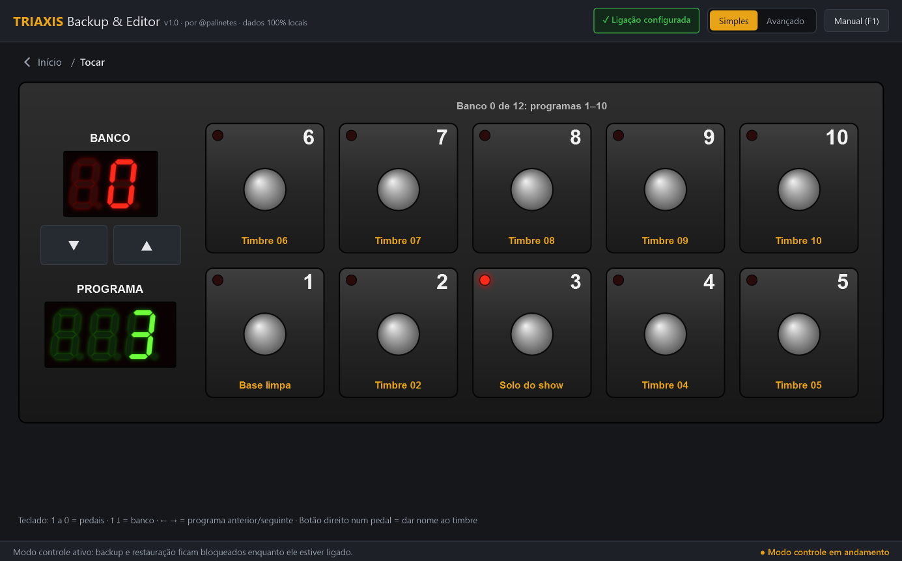
- Clique num pedal, ou aperte 1…9 e 0 no teclado, para trocar de programa. O LED do pedal ativo acende.
- BANCO ▲▼ (ou ↑ ↓) troca o grupo de 10 programas: banco 0 tem os programas 1 a 10, banco 1 tem os 11 a 20, e assim por diante.
- ← → passam para o programa anterior ou o seguinte.
- Os pedais mostram o número do programa. O programa ainda não sabe ler, do backup, qual timbre cada programa chama no seu TriAxis; quando souber, os pedais passam a mostrar o nome do timbre.
- Trocar de programa não muda nenhum timbre: é como apertar as setas de PROGRAM/CHANNEL no TriAxis.
9. Modo avançado
Ligue a chave Avançado no topo. As ferramentas ficam em abas:
| Aba | Para quê |
|---|---|
| Conexão | Escolher MIDI IN e MIDI OUT separadamente e testar a ligação (só escuta, não envia nada). |
| Controle | Pedaleira completa: canal MIDI, 4/5/8/10 pedais por banco, botões CC, aprender MIDI de uma pedaleira ligada ao PC (ex.: FCB1010) e repassar Program Change. |
| Backup / Restaurar | Backup com detalhes técnicos e restauração com ajuste de blocos e intervalo. A confirmação pede que você digite RESTAURAR. |
| Biblioteca | Busca, importação, exportação CSV e comparação byte a byte entre dois backups. |
| Editor | O painel do TriAxis com a lista de alterações byte a byte e a matriz dos 90 presets. |
| Visualizar dump | Hexadecimal/ASCII, presets e mapa de programas. |
| Configurações | Pasta, tempos, log, nomes das saídas e loops (ex.: funções da 2:90) e requisição de dump. |
| Log | Registro técnico da sessão (dispositivos, bytes, hashes, erros). |
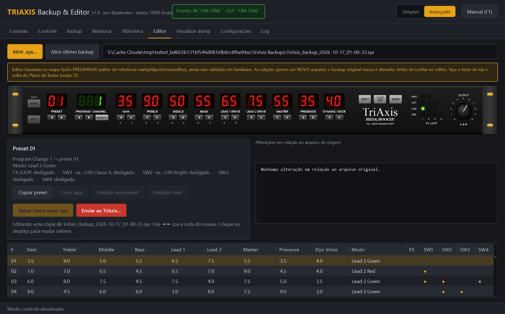
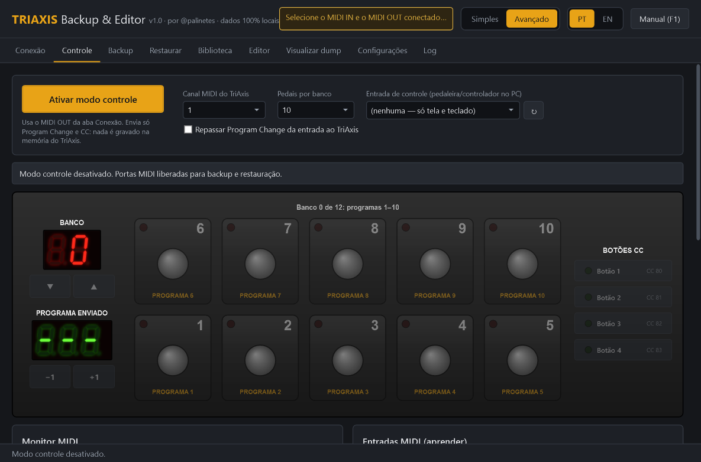
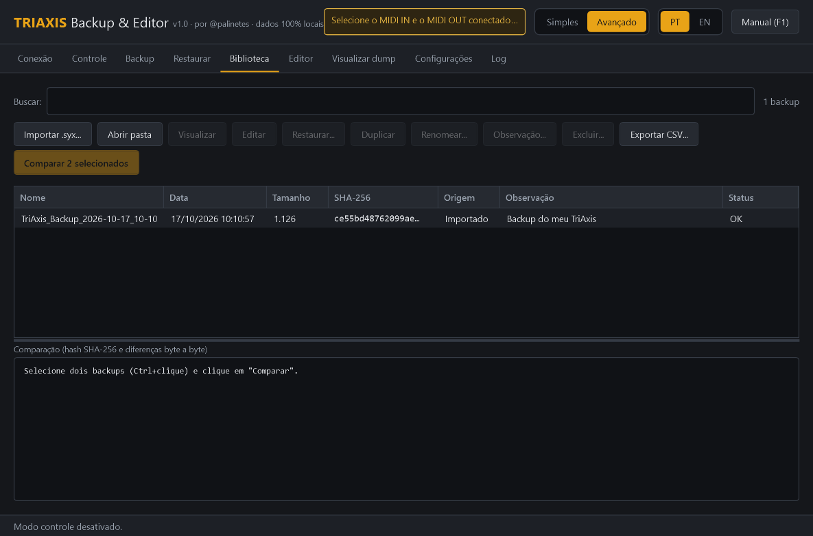
10. TriAxis + Simul-Class 2:90: loops e saídas
Com a 2:90, as saídas de switch do TriAxis (SW1–SW4) e o FX LOOP costumam comandar funções do power amp e do rack.
A 2:90 tem três entradas de Voicing Switch (atrás, no canto inferior esquerdo), e cada uma acende um LED na frente. Pelo manual dela, os switches 1, 2 e 3 do TriAxis vão nessas entradas (na traseira aparecem como DEEP EXTEND, MODERN e HALF DRIVE), com qualquer cabo (não precisa ser blindado). O estado de cada switch fica guardado em cada timbre.
- Deep: graves mais fundos e "respirados", agudos mais quentes e tridimensionais; vale para som limpo e distorcido.
- 1/2 Drive: a saída cai pela metade, o som fica mais macio e esponjoso e ganha mais ganho de potência. Um trunfo para refrões e solos.
- Modern: mais ataque nos médios e agudos e graves mais firmes, com um pouco mais de volume. Ligado junto com o 1/2 Drive, o volume quase não muda.
Em Avançado → Configurações → Saídas e loops, o botão Usar os nomes da Simul-Class 2:90 preenche SW1 = Deep, SW2 = Modern, SW3 = 1/2 Drive, a ordem dos conectores na traseira da 2:90 (Deep Extend, Modern, Half Drive, da esquerda para a direita). Confira se os seus cabos estão assim, ou ajuste os nomes.
| O quê | Onde fica | No programa |
|---|---|---|
| FX LOOP e SW1–SW4 ligados/desligados em cada timbre | Dentro de cada timbre | Editável no painel (LEDs SW e FX LOOP). Dê nomes às saídas em Avançado → Configurações → Saídas e loops. |
| Configuração geral de loops e saídas | Na região final da memória (posições 995 a 1124 do dump), ainda não decifrada | É guardada e devolvida intacta pelos backups, mas ainda não é editável. Use o roteiro abaixo para descobri-la. |
Roteiro para descobrir a configuração geral (só faz backups)
- Faça o backup A e escreva no nome qual é a configuração atual.
- No TriAxis, mude uma única configuração de loop ou saída, seguindo o manual do aparelho.
- Faça o backup B e escreva no nome o que mudou.
- No modo avançado → Biblioteca, selecione A e B (Ctrl+clique), clique em Comparar e anote as posições
Final +N(a região depois dos presets). - Volte a configuração ao valor original, faça o backup C e confira que C é idêntico a A.
| Configuração alterada | Antes → depois | Posição(ões) | Bytes A → B | C = A? |
|---|---|---|---|---|
| ex.: modo do loop | … | Final +… | … → … | sim/não |
11. Se algo não funcionar
| O que aconteceu | O que fazer |
|---|---|
| Meu aparelho não aparece na lista | Conecte o cabo USB e espere alguns segundos; troque de porta USB se precisar. A lista se atualiza sozinha. |
| "Não chegou nada do TriAxis" | Confira o cabo no MIDI OUT do TriAxis. Em cabo USB-MIDI, inverta os dois plugues. Segure SHIFT e aperte PRESET ▼. |
| "A transmissão parou no meio" | Tente de novo. Se repetir, troque o cabo ou a porta USB (evite hubs). |
| Meus timbres 1 a 20 voltam ao que eram quando religo o TriAxis | Segundo o manual do TriAxis, os presets de fábrica 1–20 são carregados de novo a cada vez que ele é ligado. Para guardar os seus nesses números, aperte SHIFT uma vez e depois LOOP no painel (isso desativa a recarga). Para usar timbres de fábrica de novo: SHIFT e depois MODE (apaga os presets 1–20!). Faça um backup antes. |
| O TriAxis não troca de programa | Em Tocar, clique em "O TriAxis não troca de programa? Descobrir o problema". O teste diz se é cabo ou número e acerta o número sozinho. |
| Quero parar um backup que não está recebendo nada | Clique em Cancelar ou feche o programa. Esperar o TriAxis não muda nada no aparelho, então dá para interromper a qualquer momento. Só o envio ao TriAxis pede para esperar terminar. |
| O display não piscou ao mandar timbres | Confira o cabo que entra no MIDI IN do TriAxis e tire a pedaleira da ligação. No modo avançado, aumente o intervalo de envio. |
Tenho um arquivo .syx salvo no site triaxiseditor.com | Ele abre normalmente. Esse site grava o backup com um "enchimento" de zeros no fim (2.746 bytes); o programa usa só a parte que o TriAxis entende (1.126 bytes) e nunca altera o seu arquivo. Ao importar, ele guarda uma cópia limpa. |
| "Não foi possível usar a interface" | Feche DAW e outros programas de música e tente de novo. |
Ao pedir ajuda, mande o arquivo de log, que fica em %LOCALAPPDATA%\TriAxisBackupEditor\logs (ou na aba Log do modo avançado).
12. Atalhos
| Tecla | Onde | Ação |
|---|---|---|
| F1 | Em qualquer lugar | Abre este manual |
| 1…9, 0 | Tocar | Pedais 1–10 |
| ↑ / ↓ | Tocar | Banco seguinte / anterior |
| → / ← | Tocar | Programa seguinte / anterior |
| Roda do mouse | Painel do TriAxis | Muda o valor do display |
13. Sobre
TriAxis Backup & Editor v1.0, por @palinetes.
O mapa da memória do TriAxis usado na edição vem do editor web de Mark Philpot (markphilpot/triaxiseditor, GPL-3.0, publicado em triaxiseditor.com). O código deste programa foi escrito do zero.
Mesa/Boogie, TriAxis e Simul-Class são marcas de seus respectivos donos. Este é um projeto independente, sem relação com o fabricante.